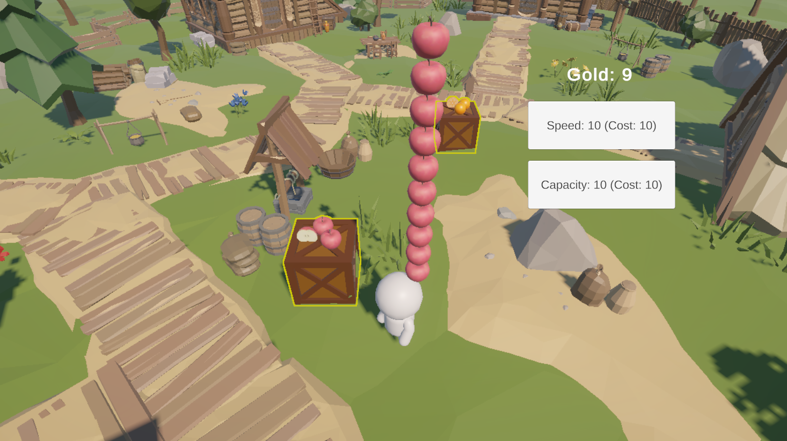
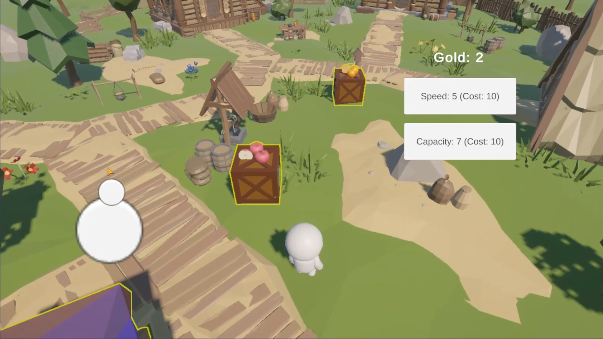
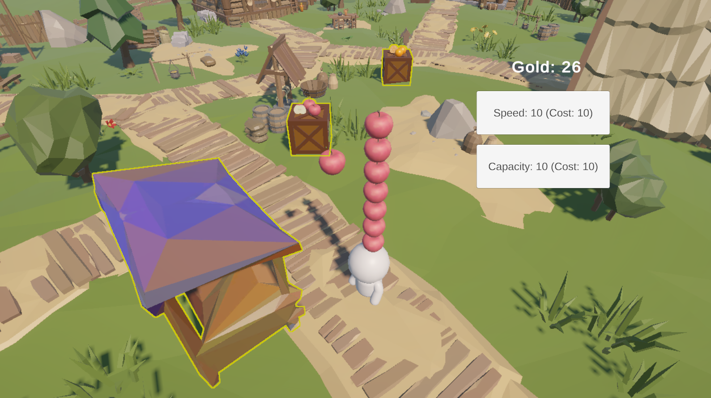
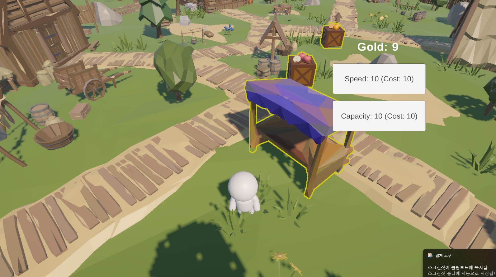
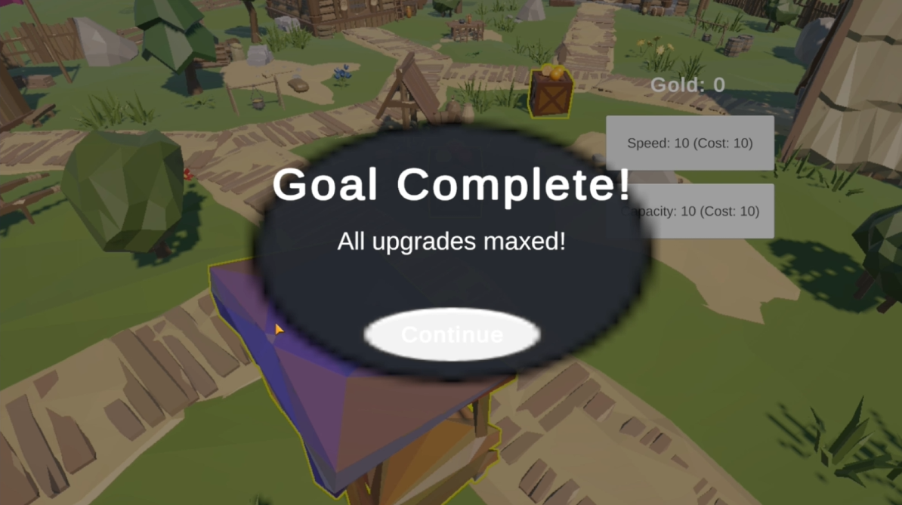

STACK
적재량에 따라 아이템 순차 배치
수집한 과일을 Stack Root 아래에서 관리하고, 일정 간격으로 배치해 캐릭터 뒤에 쌓이도록 구현했습니다. Capacity에 따라 최대 수집 개수를 제한합니다.
PERSONAL PROJECT · MOBILE CASUAL
아이템을 수집해 Stack하고 판매하여 Gold를 획득한 뒤, 캐릭터의 능력치를 성장시키는 3D 모바일 캐주얼 게임

CORE GAMEPLAY
수집과 판매를 반복해 Gold를 획득하고, 캐릭터의 Speed와 Capacity를 강화하는 짧은 반복 플레이 구조로 구성했습니다.
Floating Joystick으로 이동
생성된 과일 수집
캐릭터 뒤에 순차 적재
판매 존에서 자동 판매
Speed / Capacity 성장
두 능력치 MAX 시 클리어
01 · MOBILE INPUT
화면을 터치한 위치에 조이스틱이 생성되고, 드래그 방향을 이용해 캐릭터를 이동하도록 구현했습니다.

IMPLEMENTATION
IPointerDownHandler, IDragHandler, IPointerUpHandler를 이용해 Floating Joystick을 직접 구현했습니다.
조이스틱 입력은 CharacterController 기반 캐릭터 이동에 전달하며, 개발 중 Editor 테스트를 위해 WASD 입력도 함께 사용할 수 있도록 구성했습니다.
02 · GAMEPLAY
생성 존에서 아이템을 수집해 적재량 한도까지 쌓고, 판매 존으로 운반하면 Stack의 아이템이 하나씩 판매되도록 구현했습니다.

STACK
수집한 과일을 Stack Root 아래에서 관리하고, 일정 간격으로 배치해 캐릭터 뒤에 쌓이도록 구현했습니다. Capacity에 따라 최대 수집 개수를 제한합니다.
SELL
판매 존에 머무르면 Stack 상단의 아이템부터 하나씩 판매대로 이동하고, 판매 애니메이션이 끝나면 원래 풀로 반환됩니다. 판매된 수량만큼 Gold가 증가합니다.
OPTIMIZATION · OBJECT POOLING
수집·판매 루프에서 반복되던 아이템 생성·파괴를 재사용 구조로 변경하고, 실제 게임 로직을 그대로 사용하는 자동화 벤치마크와 Android 실기기 측정으로 개선 효과를 검증했습니다.
STRUCTURE
아이템 1개를 수집·판매할 때마다 GameObject가 1개 생성되고 1개 파괴됩니다.
판매 애니메이션이 끝난 아이템은 비활성화되어 원래 생산 존의 풀로 반환되고, ↺ 다음 수집에서 재사용됩니다.
DESIGN DECISIONS
SSItemZone이 이미 아이템 프리팹을 관리하고 있어,
존마다 ObjectPool<SSItem>을 소유하도록 설계했습니다.
전역 PoolManager나 프리팹 조회용 딕셔너리 없이
기존 구조를 그대로 활용합니다.
SSItem이 자신을 만든 풀을 기억하므로,
판매 존은 아이템 종류를 판단하지 않고
ReturnToPool()만 호출합니다.
전역 매니저 · MonoBehaviour 풀 · 데이터 기반 조회 방식과 비교 후 선택
기존에는 아이템이 파괴되면 null 검사로
스택 이동 코루틴이 스스로 종료됐지만,
풀링 후에는 객체가 파괴되지 않아 이전 코루틴이 남을 수 있습니다.
부모 Transform 검사는 재사용된 아이템이 같은 stackRoot에
다시 붙으면 통과해 버리므로, 아이템별 코루틴 핸들을 보관하고
RemoveOneItem 시점에 StopCoroutine으로
중지하도록 설계했습니다.
실제 발생한 버그가 아니라, 설계 단계에서 검토해 예방한 잠재적 문제입니다.
프리웜을 하면 최초 생성 비용이 측정 전 초기화 단계로 옮겨질 수 있습니다.
첫 사이클은 신규 생성(생성 5회), 이후 사이클은 반환된 객체 재사용(생성 0회)이 되도록 프리웜을 0으로 두었습니다.
이번 실험의 비교 가능성을 위한 결정이며, 실제 서비스에서 프리웜이 불필요하다는 의미는 아닙니다.
AUTOMATED BENCHMARK
SSBenchmarkRunner는 플레이어 입력만 대신하고, 아이템 생성·수집·판매는 실제 게임의 SSItemZone 코루틴이 그대로 처리합니다. Before / After 모두 같은 러너를 사용해 구현 차이 외의 조건을 통제했습니다.
Before / After 각각
1사이클 / 2~10사이클
Main Thread · Frame Time · GC Alloc
+ Profile Analyzer로 아이템 획득 구간 별도 측정 (Editor)
세이브·업그레이드 차단 · 적재량 5 고정 · 고정 속도 이동 · 측정 중 러너 자체 할당 방지 · Before 빌드는 Git Worktree로 분리
DEVICE RESULT
사이클당 관리 힙 할당량 (평균)
관리 힙 할당 이벤트 횟수 — GC 수집(실행) 횟수가 아닙니다.
60 FPS 상한(16.67ms)에서 의미 있는 차이가 관측되지 않았습니다.
INTERPRETATION
Unity Editor 전체 측정에서는 사이클당 약 16MB가 기록되어, Editor 자체 할당과 풀링 효과를 구분할 수 없었습니다. 이를 보완하기 위해 같은 러너로 Galaxy S25+에서 동일 조건으로 재측정했습니다.
Editor Profile Analyzer 재사용 구간에서
PoolCreateItem 호출 0회,
PoolGetItem / PoolReleaseItem
GC Alloc 0B를 확인했습니다.
실기기 반복 구간에서 사이클당 440B, 할당 이벤트 15회가 감소했습니다 (아이템당 평균 88B / 3회). 같은 변경에 코루틴 관리 코드도 포함되어 있어, 전부 Instantiate 제거의 효과라고 단정하지 않습니다.
아이템 처리 비용이 16.67ms 예산에 비해 작아 시간 지표에 드러나지 않았습니다. GC 실행 횟수는 수집하지 않아 GC 스파이크 감소도 주장하지 않습니다.
측정 한계: Development Build · 기기 1대 · 아이템 1종 · 적재량 5 고정 시나리오 · 첫 사이클의 생성 비용과 스파이크는 풀링 후에도 유지
03 · DATA / PROGRESSION
판매로 획득한 Gold를 사용해 이동 속도와 최대 적재량을 강화하며, 밸런스 데이터는 ScriptableObject로 분리했습니다.

SCRIPTABLEOBJECT
판매 가격, 기본 이동 속도, 기본 Capacity, Upgrade 비용과 증가량, 최대 Upgrade 횟수 등을 ScriptableObject로 관리했습니다.
수치 조정을 위해 게임 로직 코드를 직접 수정하지 않아도 되도록 데이터와 로직의 책임을 분리했습니다.
04 · SAVE / PROGRESS
앱을 종료한 뒤 다시 실행해도 Gold와 성장 상태가 유지되도록 로컬 저장 기능을 구현했습니다.
Gold, Speed, Capacity, Upgrade 횟수 및 게임 클리어 상태를 저장 데이터로 관리합니다.
JsonUtility를 이용해 Save Data를 JSON 형태로 직렬화합니다.
Application.persistentDataPath를 이용해 기기 로컬 저장 경로에 데이터를 기록합니다.
Scene 시작 시 저장 데이터를 불러와 이전 진행 상태를 복원합니다.
UX / POLISH
핵심 플레이 루프를 구현한 뒤 실제 플레이에서 필요한 정보 전달과 피드백을 보완했습니다.
맵 배치 후 상호작용 가능한 오브젝트의 식별성이 떨어지는 것을 확인하고, URP Outline을 상시 표시하도록 적용했습니다.
최초 실행에서만 조작 방법을 보여주는 전체화면 Tutorial Overlay를 구현했습니다.
수집, 판매, Upgrade 상황에 효과음을 적용하고, 반복 재생되는 BGM을 추가했습니다.
Speed와 Capacity가 모두 최대 단계에 도달하면 Game Clear UI를 표시하도록 구성했습니다.

DEVELOPMENT
Unreal Engine / C++ 기반의 게임 클라이언트 개발 경험을 Unity / C#으로 확장하여, 모바일 3D 캐주얼 게임의 핵심 플레이 사이클을 구현했습니다.
개발 과정에서 Claude Code를 코드 분석, 구현 보조 및 리팩터링 검토 도구로 활용했습니다.